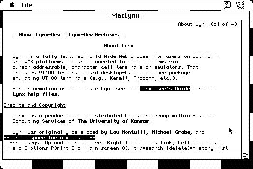

Download
maclynx_beta1.zip (406K) MacLynx 2.7.1 beta 1 repackaged into a zipped hfs disk image and checksum file. The disk image can be mounted with Mini vMac.
maclynx_beta1.sit.hqx (1.1M) MacLynx 2.7.1 beta 1 in the original format.
copyright: Olivier Gutknecht, University of Kansas
mod date: May 19, 1997
license: GPL
A “text-only browser”. A Mac port by of Lynx. Requires System 7. Source code is available.
Mini vMac doesn't yet support internet access, but MacLynx can still be used to read saved web pages. You can drop an html file on the application icon.

Download Source
maclynx271a5.src_d.zip (1M) Source repackaged into a zipped hfs disk image and checksum file. The disk image can be mounted with Mini vMac.
maclynx271a5.src.zip (1.2M) Source in the original format.
If you find these downloads useful, please consider helping the Gryphel Project, which hosts them.
Here are the md5 checksums for the downloads, signed with Gryphel Key 5:
--------- GRY SIGNED TEXT --------- a283bed590e27962f810b8f6595a148c maclynx_beta1.zip fc0191bdea3f65e8a520e7cbe071b571 maclynx_beta1.sit.hqx 5f257de0f92c108d0aba0bd643b20eef maclynx271a5.src_d.zip f7ed77721d74109b1c26db7d35083941 maclynx271a5.src.zip ------- BEGIN GRY SIGNATURE ------- Gry/4Xa8CFcUzxdN/N/TdtuhwhUSTYlgV3mXisKyMKC9J13KGoDz/osXcfcHw515 JTtSyb/JlhaxL4iBF0EHQffBVtG5KyvB+mKHJpIgSiK7iAwwmvagHbaxmz7O+/qQ mZnbCoMAUsmswLy3CbkDwW4Nr63sz6uUGT0QpXE8NfLF/Q4nyXocsJ6km4GHHfAc -------- END GRY SIGNATURE --------